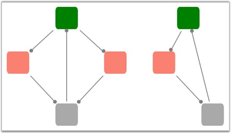

The Hierarchical-Tree layout provides support for creating cyclic paths. A cycle is said to exist, if nodes are connected in a chain such that the last node in the chain is connected back to the first node. For example, if there are four nodes namely n1, n2, n3 and n4, such that n1 is connected to n2, n2 is connected to n3, n3 is connected to n4, and n4 is again connected to n1 (n1-->n2-->n3-->n4), then these nodes are said to form a cycle.
Property:
|
Property |
Description |
Type of the property |
Value it accepts |
Any other dependencies/ sub properties associated |
|
EnableCycleDetection |
Gets or sets a value indicating whether Cycle detection is enabled or not. |
DependencyProperty |
Boolean (true/ false) |
No |
To specify a cyclic path as an input to the Hierarchical-Tree layout, the EnableCycleDetection property must be set to True. Enabling this property checks for cycles and makes connections accordingly.
|
Property |
Description |
|
EnableCycleDetection |
Enables the cyclic path to be created in the hierarchical-tree layout. This property is set to True if cyclic paths exist and False otherwise. Default value is False.
Dependent property is LayoutType property of DiagramModel which should be set to HierarchicalTreeLayout. |
 Note: The EnableCycleDetection property takes
effect only for the Hierarchical-Tree layout type of the Diagram
Model.
Note: The EnableCycleDetection property takes
effect only for the Hierarchical-Tree layout type of the Diagram
Model.
The following code example describes the setting of the EnableCycleDetection property.
|
[XAML]
<syncfusion:DiagramControl.Model> <syncfusion:DiagramModel x:Name="diagramModel" LayoutType="HierarchicalTreeLayout" EnableCycleDetection="True" Orientation="TopBottom" > </syncfusion:DiagramModel> </syncfusion:DiagramControl.Model> |
|
[C#]
DiagramModel diagramModel = new DiagramModel(); diagramModel.Orientation = TreeOrientation.TopBottom; diagramModel.LayoutType = LayoutType.HierarchicalTreeLayout; diagramModel.EnableCycleDetection = true; diagramControl.Model = diagramModel; |
|
[VB]
Dim diagramModel As New DiagramModel() diagramModel.Orientation = TreeOrientation.TopBottom diagramModel.LayoutType = LayoutType.HierarchicalTreeLayout diagramModel.EnableCycleDetection = True diagramControl.Model = diagramModel |
The following screen shot illustrates Cyclic Paths in the Hierarchical-Tree layout.

Figure 98: Cyclic Paths In Hierarchical-Tree Layout
Note: If a cyclic path is specified as an input
when the EnableCycleDetection property is set to False, then a stack overflow
exception is thrown as the loop goes on forever.
Advantages
Cyclic paths are very useful to demonstrate work flows, which involve a repeated process.
See Also